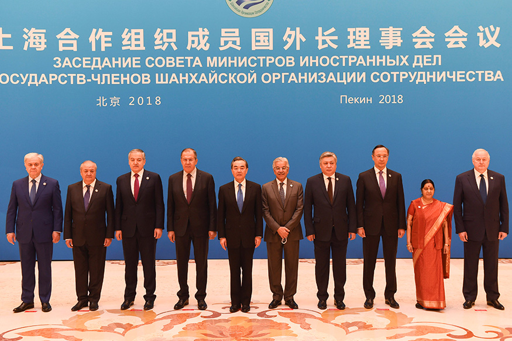

"She was a true Indian and have always represented India in its best form. She will always be my favorite politician."
Sushma Swaraj leaves a legacy of an easily-accessible external affairs minister who helped the diaspora in distress by her revolutionary social media outreach.
"Late Sushma Swaraj" with WORLD LEADERS.